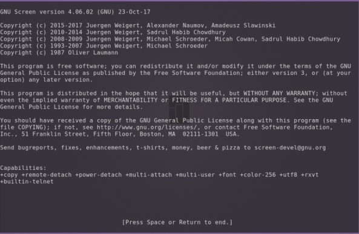
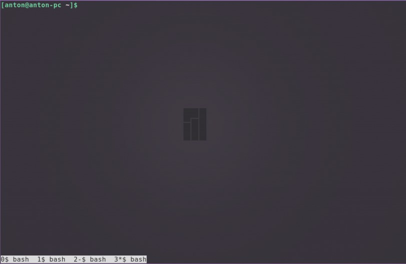
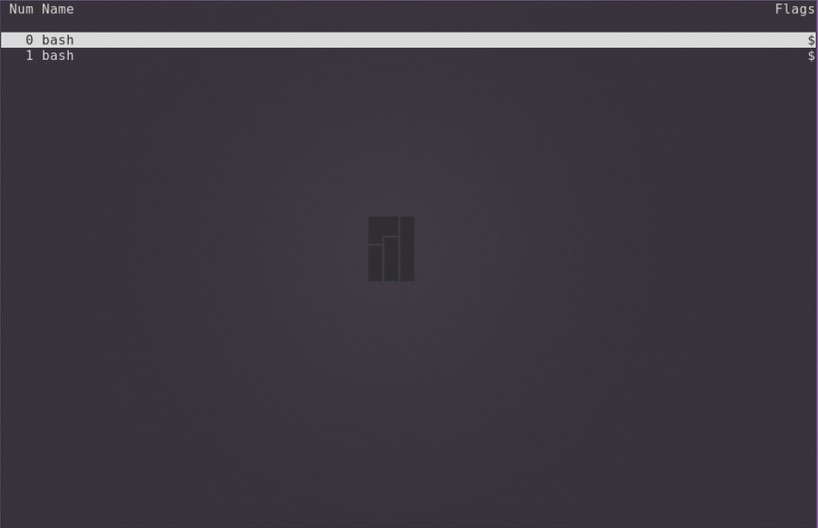
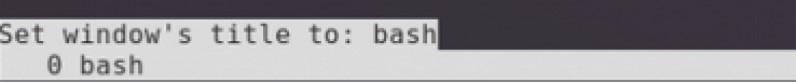
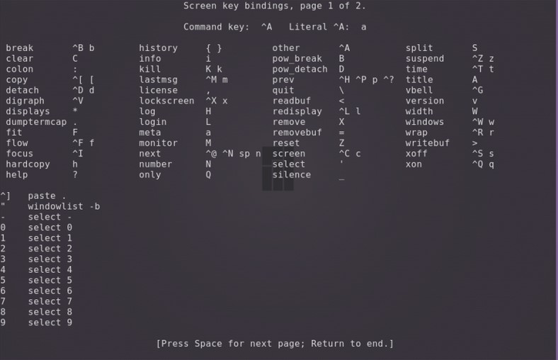

Утилита Screen позволяет создавать несколько экранов и переключаться между ними. Screen полностью решает проблему выполнения операций при разрывах соединения. Запустил команду в отдельном экране и можешь смело отключаться. Потом просто подключаешься и переходишь на нужный экран. Сессия при этом не теряется.
По умолчанию screen не является стандартной утилитой в большинстве дистрибутивов, но работает везде одинаково. Чтобы установить утилиту, введите следующую команду:
apt install screenОткройте терминал. Для запуска первого окна наберите:
screenСоздастся новая сессия программы и появится приветственное сообщение. Для его закрытия нужно нажать Space или Enter.
Все управляющие команды начинаются с комбинации клавиш Ctrl + a, затем следует буква или сочетание клавиш. Буквы разных регистров выполняют разные команды. Также сочетания можно заменять текстом. Для его ввода нажмите Ctrl + a и :, после чего вводите текст. Например, чтобы создать новое окно, нажмите по очереди сочетание Ctrl + a и затем c. Для просмотра списка созданных окон нажмите Ctrl + a и w.
Для перехода в любое из созданных окон сессии используется комбинация Ctrl + a и номер, который за ним закреплён, или Ctrl + a и ", после чего нужно выбрать стрелками необходимое. Для последовательного перехода используйте Ctrl + a и n (следующее окно) или p (предыдущее окно).
Чтобы разделить экран по горизонтали, нажмите Ctrl + a и s. Или используйте команду
splitБудет создано новое окно снизу от текущего, (при этом оно не становится активным). Чтобы разделить по вертикали, нажмите Ctrl + a и |. Или используйте команду
split -vБыли созданы новые пустые окна. Для переключения между ними используйте Ctrl + a и Tab. Для скрытия окна используйте Ctrl + a и x.
Чтобы скрыть все окна и оставить только текущее, используйте Ctrl + a и q.
Переименовать окно можно с помощью Ctrl + a и a. Внизу появится строка с возможностью заменить старое название.
Чтобы скрыть все окна сессии, нажмите Ctrl + a и \. Подтвердите решение нажатием y. Для выхода из менеджера окон нажмите Ctrl + a и d.
Команда screen обладает большим набором горячих клавиш. Полный их список можно посмотреть с помощью Ctrl + a и ?.
При создании новой сессии screen можно задать ей имя. Таким образом можно создать несколько сессий. Чтобы сделать это, используйте параметр -S, после которого укажите название.
screen -S имя_сессииПосмотреть список запущенных сессий можно командой
screen -lsСтрока, идентифицирующая сессию, состоит из нескольких полей: id, название и статус.
Значение id отображается в списке всех запущенных процессов. Это означает, что его можно завершить с помощью команды kill. Завершить работу текущего окна можно с помощью комбинации Ctrl + a и k, подтвердите решение нажатием y.
Статус может иметь два состояния: Attached (задействован) и Detached (незадействован). Второе состояние у сессий, в которых ещё не происходили никакие процессы.
Чтобы перейти в нужную сессию, следует указать параметру -r её id или название.
screen -r id_сессии